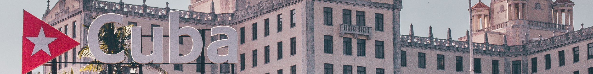

¿Un sueño? Cuba
 Foto de Yuting Gao de PexelsSi le pregunto a mi amo cuál fue su último sueño cumplido, tengro clara su respuesta. ¡Nuestro viaje a CUBA! Porque Cuba es música, baile y alegría, Cuba es sol y playa. Cuba es cultura. Y, sobre todo, Cuba es su gente. Vamos a dar un paseo y te cuento:
En Cuba todo es una experiencia. Desde el transporte, cambiar dinero, comprar cosas básicas, tomar algo, comer o conseguir alojamiento. Sígueme a lo largo del siguiente itinerario:
- La Habana
- Playa Larga
- Trinidad
- Cayo Guillermo
- Santa Clara
- La Habana
Una cosa importante a tener en cuenta antes de salir es la época del año en la que viajas. Nosotros fuimos en agosto, que es época de huracanes, y aunque libramos (tan solo por unos días), puede haber tormentas y allí cuando llueve, LLUEVE. Lo bueno es que suele durar poco y sirve para refrescar y limpiar un poco el ambiente. Por lo demás, hace calor, mucho calor, y hay mucha humedad así que hay que ir preparada.
La Habana
La Habana es una gran ciudad. Pero una gran ciudad diferente, al menos a lo que estamos acostumbrados en Europa. Olvídate de tiendas, tráfico y ruido, y piensan en música e interesantes conversaciones. La Habana es una ciudad para andar y perderse conociendo a sus gentes.
Como recomendaciones, el Museo de la Revolución os situará en la isla y su historia. Además, en el puerto encontraréis un barquito que, por unas pocas monedas, os llevará al otro lado, y podréis dar un paseo subiendo a la fortaleza. Por último, no hay mejor manera de acabar el día que disfrutando de una rica cerveza en la Plaza Vieja
Playa Larga
Si la Habana es una gran ciudad; Playa Larga, es todo lo contrario. Situada en plena Bahía de Cochinos, es el lugar perfecto para conocer el modo de vida de los cubanos. Sus costas, llenas de cangrejos, dan paso a preciosos fondos marinos en los que no pierdas la oportunidad de hacer pesca submarina y disfrutar de los manjares que se encuentran en el mar.
Trinidad
Probablemente la joya de la corona. El pueblo más bonito y con más encanto. Encontrarás turismo pero, como todo allí, tiene su encanto. Pasear por sus coloridas calles hace las delicias de cualquiera.
Cayo Guillermo
Si te gusta la playa, los Cayos son parada obligada. En cuba hay playas preciosas, pero como las de los Cayos, ninguna. Playas infinitas de arena blanca en las que relajarte y disfrutar de los servicios de los hoteles, aquí sí, de estilo más europeo.
Santa Clara
Santa Clara es la ciudad revelde por escelencia. Si en colorido de Trinidad, es una ciudad bonita y amable. Y la más moderna, gracias al gran número de estudiantes que viven en ella. Además, se trata de una ciudad clave en la historia cubana, ya que fue precisamente allí donde comenzó la Rebolución, encabezada por el Ché Guevara. Es por este motivo que allí se puede visitar su mausoleo.